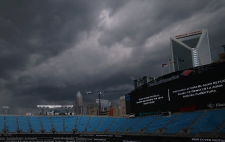

The never-ending season had the never-ending game. This was Chelsea’s 61st game of a gruelling campaign and they emerged victorious only after the competing forces of the erratic American weather and the pedantic interference of VAR dragged it into extra-time at the Bank of America Stadium.
There cannot have been a weirder denouement to a football match. There was a delay lasting close to two hours because of a thunderstorm, a contentious equalising penalty from Benfica after play resumed, a red card and, perhaps least expected of all, a winning goal from Christopher Nkunku to send Chelsea through to the last eight of the Club World Cup .
They all streamed off Chelsea’s bench when the France forward stuck the ball into the net in the 108th minute. Nkunku, who is up for sale after falling from favour, had put Enzo Maresca’s side 2-1 up after pouncing when Moises Caicedo’s shot squirmed from Anatoliy Trubin’s grasp. They will face Palmeiras next and will see a chance to reach the semi-finals after making it through a barmy contest.
It should not have been this complicated. Ahead through a thunderbolt of a free-kick from Reece James, Chelsea were within touching distance of beating Benfica in normal time. The game was done. Benfica, displaying none of the vim that saw them beat Bayern Munich, were poor. Presumably it was not part of their plan when play stopped with five minutes to go, the Slovenian referee sent the players down the tunnel and the 25,929 fans at the Bank of America Stadium were ordered to seek cover after lightning struck within a 10-mile radius.
Storm clouds over Bank of America stadium after referee Slavko Vincic signals a weather delay.Photograph: Mike Segar/Reuters
Severe weather protocol implemented, there was no option but to wait. And wait. Chelsea were cruising until the sky over Charlotte went dark. The protocol involves a minimum 30-minute delay but the clock reset after every lightning strike. An idea: if you’re in an area prone to dangerous weather, build a stadium with a roof. Time dragged on, good news elusive. The game did not resume for one hour and 53 minutes. The teams had spent the time keeping themselves warm in their dressing rooms. Unfortunately there were no individual walkouts when they returned to the pitch.
With another weather system on the way, the decision was made to ignore the protocol and get the game done. They rushed through a warmup, Chelsea brought Trevoh Chalobah on for Romeo Laiva and play restarted with a Robert Sanchez free-kick. Desperation took over. Six minutes were added on, Benfica won a free-kick and pumped the ball into the Chelsea area.
Malo Gusto leapt with his arms outstretched but mistimed his jump. Soon Benfica were appealing for a penalty, claiming the Chelsea defender had handled when Nicolas Otamendi headed on. Play carried on but not for long. It was that kind of night. A VAR review was inevitable. Gusto was culpable under the laws and it was heading for extra-time when Angel Di Maria, still going strong at the age of 37, stepped up to send Robert Sanchez the wrong way from the spot with 95 minutes on the clock.
Chelsea could have cracked at that point. Instead, Benfica lost their cool. They were down to 10 men when the substitute, Gianluca Prestiani, was sent off after picking up a second booking for fouling Levi Colwill. The game became ragged and Chelsea pounced on the wide open spaces. Nkunku popped up after Caicedo won possession and surged through on goal. Further goals from Pedro Neto and Kiernan Dewsbury-Hall ensured that the final score was 4-1, reflecting Chelsea’s dominance.
They have developed an encouraging knack for winning by any means possible, which is a good trait to bring into tournament football. Next up, a return to Philadelphia to face Palmeiras, means a chance to have a close look at Willian Estevao. The Brazilian prodigy joins Chelsea after this tournament and can hasten the transfer by sending his next club back to London on Friday.
Before the lightning farrago, Maresca had experimented. Cole Palmer’s positioning on the left allowed Caicedo, Enzo Fernandez and Lavia to start in the same midfield for the first time since the opening day of last season.
The idea was to find space against Benfica’s wing-back’s system. Palmer drifted off the flank and Marc Cucurella pushed up the left, more winger than full-back at times. Cucurella was positive and had Chelsea’s best two chances of the first half.
It was hot at kick-off. A sticky pitch was full of weird bounces. Chelsea had to remain patient. Frustration set in at the start of the second half. Caicedo ruled himself out of the quarter-final after picking up a booking for dissent.
It took ingenuity to pick the lock. From a free-kick way out on the left, James sized up the angles and caught Trubin out at his near post, shooting when everyone expected a cross.
It was the captain’s third free-kick of 2025. That was a minor detail. The lightning took over. Extra-time was fun, Palmer testing Trubin, Di Maria leading a series of counterattacks. Yet Prestiani’s folly cost Benfica. Eventually Chelsea made their extra man count. Nkunku, who seems to have no place in Maresca’s system and had come on for Liam Delap merely to see Chelsea over the line when it was 1-0, scored from three yards out.
Neto and Dewsbury-Hall then ran through to score with polished finishes. It took four hours and 38 minutes to complete. Chelsea march on.